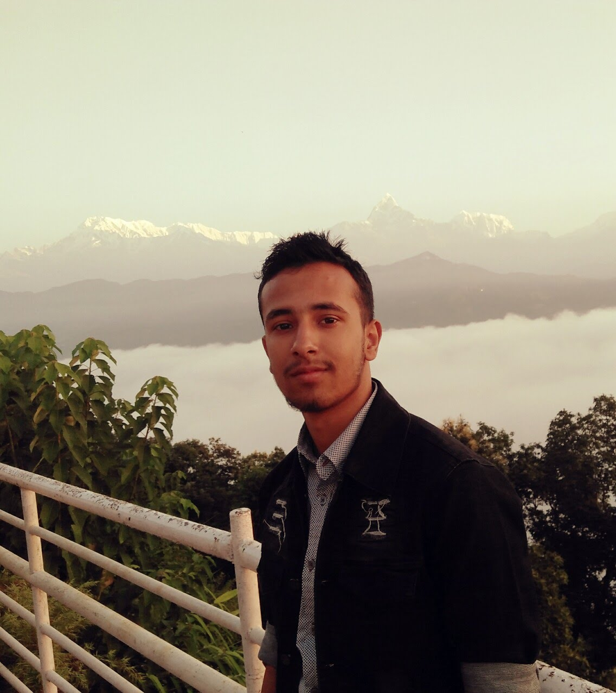

About Me


Hi again! My name Aadhar Wasti. I am a freshman at NYUAD. I'm hoping to major in Interactive Media. My interests include sketching, writing, and sports - mainly football.
About The Projects
The projects presented in this site are the major class projects I did in my Communications Lab class. This portfolio site itself is one of those projects. Communications Lab is a required course for Interactive Media, and I'm taking it with Professor Jiwon Shin. The class has been super fun and the projects have been really engaging and intriguing to work on.